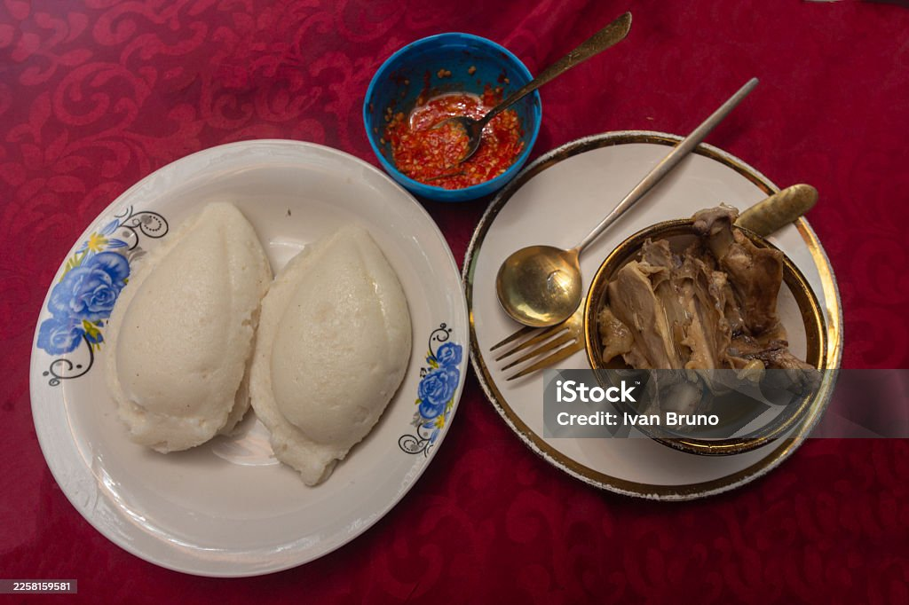

Home
Nsima

Description
Nsima is a traditional African dish made from cornmeal and water, often served with vegetables or meat.
Ingredients
Steps
- Boil water in a cooking pot.
- Mix some maize flour with cold water in a separate container to make a smooth mixture.
- Pour the mixture into the boiling water while stirring.
- Allow the mixture to boil for about 5 minutes.
- Gradually add maize flour while stirring continuously with a wooden cooking stick (nthiko).
- Cover the pot and allow the nsima to cook for approximately 5–10 minutes over low heat.
- Stir and turn it thoroughly until smooth and firm.
- Serve into portions using the chipande while hot.